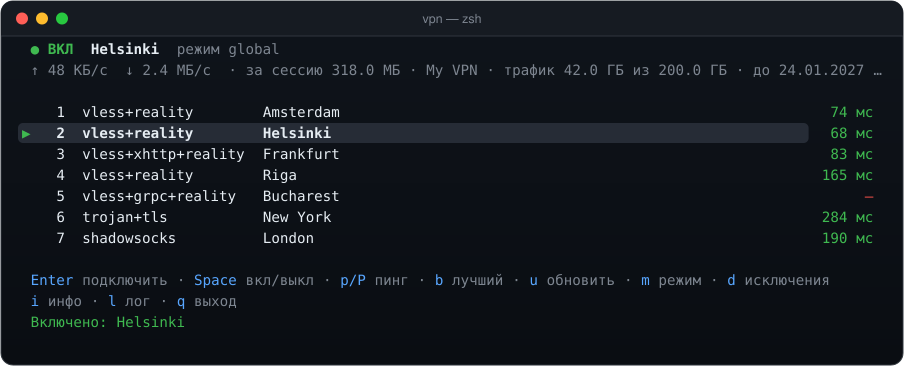

A terminal Xray / VLESS Reality client for macOS
Type vpn, pick a server, press Enter. Provider subscriptions, real latency tests, failover and a watcher that survives reboots. And ssh to your own servers keeps working: SSH and your LAN always bypass the VPN.

Features
- SSH bypasses the VPNPort 22, private networks and your exclusions always go direct.
- TUI and CLITerminal UI with latency, live speed and logs; vpn on / off for scripts.
- SubscriptionsMarzban, Remnawave, 3x-ui: servers, traffic and expiry.
- ProtocolsVLESS (Reality, XHTTP, gRPC, WS), VMess, Trojan, Shadowsocks.
- Self-healingRestores the VPN after reboot and fails over when a server dies.
- TUN modeExperimental: route every app through the VPN.
Install
brew install --cask pnnnx/tap/vpnQuick start
vpn sub 'https://your-subscription-url'
vpn # P — ping, b — fastest, Enter — connect
vpn autostart on # autostart and failoverFAQ
Why does SSH stop working when a VPN is on?
Many clients run in TUN mode and send all traffic through the VPN, and VPN servers often block outbound port 22. vpn runs as a local proxy and always sends SSH and your LAN direct.
How is vpn different from v2rayN, Hiddify or Nekoray?
It is a small terminal client with no GUI: a single binary, a TUI, scriptable commands and launchd automation.
Which subscriptions are supported?
Marzban, Remnawave, 3x-ui and other panels, as base64 or plain lists of vless://, vmess://, trojan:// and ss:// links.
Is it free?
Yes, it is open source under the MIT license. You bring your own VPN server or subscription.